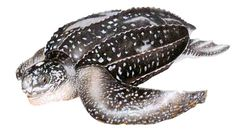
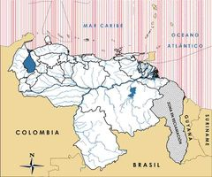

Dermochelys coriacea
| Cardón | |
|---|---|
|  | |
| Riesgo de extinción | |
 En peligro (UICN) | |
| Clasificación científica | |
| Reino: | Animalia |
| Filo: | Chordata |
| Clase: | Reptilia |
| Orden: | Testudines |
| Familia: | Dermochelyidae |
| Género: | Dermochelys |
| Especie: | Dermochelys coriacea |
| Nombre binomial | |
|
Dermochelys coriacea Vandelli, 1761 | |
| Distribución | |
|
 Mapa de distribución de Dermochelys coriacea | |
Contenido
Información de Evaluación
- Categoría y Criterio Regional: En Peligro A2acd
- Fecha de Evaluación Regional: 2015
- Evaluadores: Jesús Morales-Campos y Ariany García-Rawlins
- Categoría y Criterio Global: Vulnerable A2bd
Justificación
Evaluaciones Previas
1999: En Peligro
2008: En Peligro Crítico
Información General
Nombres comunes
Tortuga cardón, tortuga negra, laúd, baúla, canal, tinglar, tartaruga de couro, leatherback turtle, tortue luth.
Notas taxonómicas
Sinónimos
Descripción
Es muy fácil de reconocer por su enorme tamaño, ya que la longitud recta del caparazón puede alcanzar 180 cm (Pritchard y Trebbau 1984, Pritchard y Mortimer 2000). El largo curvo medio del caparazón de las hembras reproductoras en Venezuela oscila entre 152 y 156 cm (Pritchard y Trebbau 1984, Balladares et al. 2010). Pesa de 250 a 500 kg (Rondón-Médicci et al. 2011, Arias-Ortiz et al. 2013). Las escamas córneas en las crías son temporales y en adultos el cuerpo está recubierto por una piel suave y negra con manchas blancas y siete crestas longitudinales en la parte dorsal (Pritchard y Trebbau 1984, Eckert 2001, Eckert et al. 2012). Su cabeza se reconoce no solo por la ausencia de escamas, sino también por dos fuertes cúspides bordeadas con hendiduras, al frente de la mandíbula superior (Pritchard y Trebbau 1984, Pritchard y Mortimer 2000). Su dieta está constituida fundamentalmente por organismos gelatinosos relacionados con los Cnidaria (medusas o aguamalas), Ctenophora y Urochordata (tunicados) (Pritchard y Trebbau 1984, Eckert et al. 2012).
Distribución
Especie pelágica de amplia distribución en los océanos (Eckert et al. 2012). Anida en los trópicos; sus más importantes áreas de reproducción en el hemisferio occidental están principalmente en Guyana Francesa, Surinam y Trinidad (Eckert 2001, Troeng et al. 2004, Eckert et al. 2012, Wallace, B. P. et al. 2013). Las mayores densidades de anidación en el país se reportan en la península de Paria y Nueva Esparta (> 1000 nidos/año) (Guada y Solé 2000, Vernet P. y Gómez B. 2007, Guevara C. 2008, Vernet P. y Arias-Ortiz 2010, Rondón-Médicci et al. 2010, Rondón-Médicci 2011, Arias-Ortiz et al. 2013). Hay anidación en la Guajira, la península de Paraguaná, el parque nacional Morrocoy, la franja costera de Morón, Aragua, Vargas, Miranda, Anzoátegui, Sucre y Delta Amacuro. En el sector insular hay desoves en La Blanquilla, La Tortuga, los archipiélagos Los Roques y Los Testigos. Los reportes de capturas incidentales y varamientos indican que se alimenta en aguas venezolanas (Pritchard 1982, Pritchard y Trebbau 1984, (Medina et al. 1987, Guada y Vernet P. 1990, Acuña P. y Toledo N. 1994, Aguilera, M. y Acuña 1996, Guada 2000, Guada y Solé 2000, Balladares y Quijada 2001, De los Llanos 2002, Parra Montes de Oca 2002, Alió 2004, Barreto-Betancur 2004, Balladares 2004, Antczak et al. 2007, Balladares 2007, Gallardo 2007, Guevara C. 2008, Señaris et al. 2008, Arias O. y Vernet P. 2009, Vernet P. et al. 2009, Alió et al. 2010, González Rivero 2010, Moreno, A. et al. 2010, Rondón-Médicci et al. 2010, Cabello et al. 2011, Cisnero 2011, Pulgar H. et al. 2011, Rojas, D. et al. 2011, Velásquez y Prieto 2011, Vernet P. y Arias-Ortiz 2011, Vernet P. et al. 2011, Cisnero y Guada 2013, Espinoza Rodríguez et al. 2013, González Viloria et al. 2013, Pérez, A. 2013, Pulgar H. et al. 2013, Rondón-Médicci 2013b, Vásquez et al. 2013, Vernet P. et al. 2013, Pulgar H. y Díaz Gil 2014, Velásquez 2014). La especie es capaz de usar varias playas distantes durante una temporada (con individuos observados entre Paria, Trinidad e Isla de Margarita) (Hernández S. et al. 2005, Balladares et al. 2010). Se han detectado desplazamientos postanidatorios entre Guyana Francesa y el golfo de Venezuela (Pritchard y Trebbau 1984), entre Trinidad y Paraguaná (Balladares y Quijada 2001), y entre Paria y Canadá (Canadian Wildlife Federation 2014).
- Sistema: Terrestre, Marino
- Bioregión:
- Intervalo altitudinal (m): Temporalmente sin información
- Endémica: No
Situación
De ser considerada una tortuga escasa a mediados de los años ochenta (Pritchard y Trebbau 1984), ahora es la segunda especie con más nidadas en el país (Guada y Buitrago B. 2008). La estimación de hembras adultas en Paria supera las 270 por año, con tendencia al incremento (Rondón-Médicci et al. 2011), y es probable que en Venezuela nidifiquen más de 500 hembras por año (Pritchard y Mortimer 2000). Se clasifica globalmente como Vulnerable, pero en la región del Atlántico noroccidental, donde se incluye a Venezuela, se considera en la categoría de Preocupación Menor, por la cantidad de ejemplares maduros (33.810 individuos) y las proyecciones de crecimiento poblacional, estimando su tiempo generacional en treinta años (equivalente a la edad de madurez, calculada en 20 años en promedio para la especie, más una proyección conservadora de la mitad de la edad reproductiva de 10 años) (Wallace, B. P. et al. 2013). Analizando la información disponible de Venezuela a la luz de la reciente evaluación global de la especie (Wallace, B. P. et al. 2013) y suponiendo una tendencia al aumento en la población reproductiva más importante del país (en la región nororiental), el intercambio vía migraciones postreproductivas y la interacción persistente en las pesquerías artesanales, debe estimarse que su categoría adecuada debe ser En Peligro (UICN 2012a, UICN 2012b), en lugar de la categoría En Peligro Crítico, a la cual se asignó en 2008 (Rodríguez, J. P. y Rojas-Suárez 2008).
- EOO (km2): Temporalmente sin información
- AOO (km2): Temporalmente sin información
- Tendencia Poblacional: Decreciendo
Amenazas
Las principales causas de la disminución de sus poblaciones son la pesca incidental, el consumo de su carne y el saqueo de sus nidadas (Pritchard y Trebbau 1984, Medina et al. 1987, Aguilera, M. y Acuña 1996, Guada y Solé 2000, Balladares y Quijada 2001, Eckert 2001, De los Llanos 2002, Parra Montes de Oca 2002, Rodríguez, J. P. y Rojas-Suárez 2003, Alió 2004, Balladares 2004, Antczak et al. 2007, Señaris et al. 2008, Vernet P. et al. 2009, Vernet P. et al. 2011, Vernet P. et al. 2013, Cabello et al. 2011, Vernet P. et al. 2011, Cisnero y Guada 2013, Pérez, A. 2013, Vernet P. et al. 2013, Wallace, B. P. et al. 2013, Roe et al. 2014, Velásquez 2014). La tortuga cardón tiene el mayor registro de varamientos en Venezuela: entre 2009 y 2013 el porcentaje varió entre 27,7 y el 63,1% del total de registros (Balladares y Quijada 2001, Alió 2004, Balladares 2004, Balladares 2007, Alió et al. 2010, Rojas, D. et al. 2011, González Viloria et al. 2013, Rondón-Médicci 2013b, Vásquez et al. 2013, Roe et al. 2014). El impacto de la presencia de comunidades costeras, actividades turísticas y la presencia de desechos sólidos en las playas de anidación afecta a hembras y crías (Guada y Buitrago B. 2008, González Rivero 2010, Cisnero 2011). El cambio climático y sus potenciales impactos, como el aumento del nivel del mar y el incremento en la intensidad y frecuencia de las tormentas en las localidades de desove, podrían afectar de manera importante a esta especie (Rodríguez, J. P. y Rojas-Suárez 2003, Hamann et al. 2013, Wallace, B. P. et al. 2013). En el golfo de Venezuela, el golfo de Paria y en la costa atlántica debe evaluarse el impacto de las operaciones de exploración y explotación de hidrocarburos costa afuera sobre sus rutas migratorias.
Conservación
La especie está completamente protegida por la legislación venezolana y se beneficia de varios instrumentos legales nacionales e internacionales tales como la Convención sobre el comercio internacional de especies amenazadas de fauna y flora silvestres (Cites 2014), el Anexo II del Protocolo relativo a las áreas y flora y fauna silvestres especialmente protegidas en la Región del Gran Caribe (SPAW 1991) y la Convención interamericana para la protección y conservación de las tortugas marinas; varios parques nacionales proporcionan protección para sus áreas de anidación (Guada y Solé 2000, Babarro 2004, Troeng et al. 2004, Buitrago B. et al. 2008). Diferentes organizaciones realizan actividades de investigación, divulgación, sensibilización y capacitación en su beneficio y no hay espacio disponible para incluir todas las contribuciones. Incluso una institución ha proporcionado aportes para mejorar la conservación de la tortuga cardón (Giraldo Hernández et al. 2009). Disminuir la mortalidad en las pesquerías artesanales (redes de ahorque y palangres, principalmente) es una medida a tomar de modo urgente y a este fin la coordinación entre el Ministerio del Poder Popular para Ecosocialismo y Aguas y el Ministerio del Poder Popular para la Pesca y Acuicultura, es absolutamente prioritaria. Una investigación y mitigación efectiva de la captura incidental dependerá de la integración de la ecología de las tortugas marinas, de la información oceanográfica, del manejo de las pesquerías y de las ciencias sociales (Lewison et al. 2013). El resguardo de sus hábitats de anidación y alimentación, reforzar el cumplimiento de la legislación y sensibilizar ampliamente a residentes y turistas sobre la situación de estas tortugas es indispensable para garantizar su sobrevivencia. La investigación y conservación deben fortalecerse en todo el país en una multiplicidad de aspectos, como el efecto de la temperatura de incubación, las tendencias poblacionales y la caracterización genética de las poblaciones, entre otros. Es preciso contemplar financiamiento para todas estas actividades en una perspectiva multianual.
Autorías
Autores originales
María de los Ángeles Rondón-Médicci, Hedelvy J. Guada, Joaquín Buitrago (†) y Clemente Balladares
Colaboradores
Ilustrador
Amelie Areco
Referencias
- Acuña P., A.J. & J.R. Toledo N. 1994. Registros raros de Dermochelys en el Golfo de Venezuela. Noticiero de Tortugas Marinas 64:10
- Aguilera, M. & A. Acuña. 1996. 1995 records of sea turtles in the Gulf of Venezuela, State of Zulia. Marine Turtle Newsletter 75:20-21.
- Alió, J. 2004. Evaluación de capturas incidentales de tortugas marinas en las pesquerías de Venezuela. Pp: 72-73. En: R. Babarro, A. Sanz y B. Mora (eds.). Tortugas Marinas en Venezuela: Acciones para su Conservación. Oficina Nacional de Diversidad Biológica, Dirección de Fauna, Ministerio del Ambiente y de los Recursos Naturales. Caracas, Venezuela: Fondo Editorial Fundambiente.
- Alió, J.J., L.A Marcano & D.E. Altuve. 2010. Incidental capture and mortality of sea turtles in the industrial shrimp trawling fishery of northeastern Venezuela. Ciencias Marinas 36(2):161–178
- Antczak, A., J. Buitrago, M.M. Mackowiak de Antczak & H.J. Guada. 2007. A Contribution to the History of Marine Turtles Exploitation in Venezuela. Gulf Caribbean Fisheries Institute 59:63-73
- Arias O., A.O. & P.D. Vernet P. 2009. Evaluación de la situación actual de las poblaciones de tortugas marinas en las zonas de alimentación y anidación en el Archipiélago Los Testigos, Dependencia Federal. Pp:151. En: Giraldo, D., Rojas-Suárez, F. y V. Romero (eds.). Una Mano a la Naturaleza, Conservando las Especies Amenazadas Venezolanas. Provita y Shell Venezuela, S.A. Caracas, Venezuela.
- Arias-Ortiz, A., P. Vernet & L.E Sánchez-Arias. 2013. Biología reproductiva de Dermochelys coriacea en las playas nororientales de Isla de Margarita, estado Nueva Esparta, durante las temporadas 2001-2010. Pp: 254. X Congreso Venezolano de Ecología. Mérida, Venezuela. Noviembre, 2013.
- Babarro, R. 2004. Marco legal relativo a la conservación de las tortugas marinas en Venezuela. Pp:27-45. En: R. Babarro, A. Sanz y B. Mora (eds.). Tortugas Marinas en Venezuela: Acciones para su Conservación. Oficina Nacional de Diversidad Biológica, Dirección de Fauna, Ministerio del Ambiente y de los Recursos Naturales. Caracas, Venezuela: Fondo Editorial Fundambiente.
- Balladares, C. 2004. Varamientos de tortugas marinas en Venezuela. Pp: 67-70. En: R. Babarro, A. Sanz y B. Mora (eds.). Tortugas Marinas en Venezuela: Acciones para su Conservación. Oficina Nacional de Diversidad Biológica, Dirección de Fauna, Ministerio del Medio Ambiente y de los Recursos Naturales. Caracas, Venezuela: Fondo Editorial Fundambiente.
- Balladares, C. 2007. Mortalidad de tortugas marinas en Venezuela. VII Congreso Venezolano de Ecología. Ciudad Guayana, Venezuela. Noviembre, 2007 54. Rojas, D., L. Carruyo, J. Reverol, J. Palmar, N. Espinoza & H. Barrios-Garrido. 2011. Registro preliminar de tortugas marinas sacrificadas en la localidad de Kasusain, Alta Guajira venezolana. Pp:304. En: IX Congreso Venezolano de Ecología. Libro de Resúmenes.
- Balladares C., L. Cova & N. Mata. 2010. Heridas causadas por depredadores naturales e interacciones humanas sobre tortugas marinas anidantes en Playa Los Garzos (estado Sucre, Venezuela). Bol. Inst. Oceanogr. Venezuela 49(2):123-128.
- Balladares, C. & A. Quijada. 2001. Informe de Actividades Salida de Campo al Estado Falcón (28/Mayo al 01/Junio/2001). Proyecto: Tortugas Marinas. Dirección de Fauna Acuática. MARN. 11 p.
- Barreto-Betancur, Y. 2004. Caracterización de las zonas de alimentación y anidación de las tortugas marinas en la costa central de Venezuela, con énfasis en áreas de anidación de Dermochelys coriacea y áreas de alimentación de Eretmochelys imbricata. Iniciativa de Especies Amenazadas – PROVITA. Caracas 58 p.
- Buitrago B., J. 1987. Observaciones sobre la anidación de tortugas marinas en Los Roques (Venezuela) y evaluación de medidas para su protección. An. Inst. Inv. Mar. Punta de Betín 17:137-153.
- Buitrago, J., H.J. Guada & E. Doyle. 2008. Conservation science in developing countries: an inside perspective on the struggles in
- Cabello, D., V. Ilukewitsch, A. Moreno, M. Gamero, E. Blanco, R. Escobar, R. & S. Gutiérrez, S. 2011. Proyecto Oritapo: Conservación de tortugas marinas en las playas del sector Oritapo, Edo. Vargas. Pp:153. II Congreso Venezolano de Diversidad Biológica. Universidad Bolivariana de Venezuela. Caracas. Ministerio del Poder Popular para el Ambiente, Oficina de Diversidad Biológica y Fondo Nacional de Ciencia y Tecnología e Innovación.
- Canadian Wildlife Federation. Koopas (B). 2014. Web page: cwf-fcf.org/en/do-something/challenges-projects/gctr/the-turtles/turtle-b.html (Bajado el 17 de Marzo de 2014).
- Cisnero, M.J. 2011. Evaluación de las áreas de anidación de tortugas marinas registradas en el Parque Nacional Morrocoy en la temporada 2010. Tesis de Grado. Departamento de Biología, Facultad de Ciencias y Tecnología (FACYT), Universidad de Carabobo. 85 p.
- Cisnero, M. J. & H.J. Guada. 2013. Seguimiento de la anidación de tortugas marinas en el Parque Nacional Morrocoy, estado Falcón, temporada 2012. Pp:636. En: X Congreso Venezolano de Ecología. Libro de Resúmenes. Ediciones IVIC. 204 p.
- De los Llanos, V. 2002. Evaluación de la situación de las poblaciones de tortugas marinas en el Parque Nacional Archipiélago de los Roques. Tesis de Licenciatura. Universidad Central de Venezuela, Caracas, Venezuela. 77 p.
- Eckert, K.L. 2001. Estado de conservación y distribución de la tortuga laúd, Dermochelys coriacea, en la región del Gran Caribe. Pp: 25-33. En: K.L. Eckert y F.A.Abreu-Grobois (eds.). Conservación de las tortugas marinas en la región del Gran Caribe: Un diálogo para el manejo regional efectivo. (Traducción al español R. Briseño Dueñas y F.A. Abreu Grobois). WIDECAST, UICN/CSE Grupo Especialista en Tortugas Marinas (MTSG), WWF y el Programa Ambiental del Caribe del PNUMA. XX + 170 p.
- Eckert, K.L., B.P. Wallace, J.G. Frazier, S.A. Eckert & P.C.H. Pritchard. 2012. Synopsis of the Biological Data of the Leatherback Sea Turtle (Dermochelys coriacea). U.S. Department of the Interior, Fish and Wildlife Service, biological Technical Publication BTP-R4015-2012, Washington, D.C.
- Espinoza Rodríguez, N.; P. Vernet, L. Morán, H. Barrios-Garrido & N. Wildermann. 2013. Primer reporte de la actividad de anidación de tortugas marinas en la costa nor-occidental del Golfo de Venezuela. Boletín del Centro de Investigaciones Biológicas, 47(1): 86 - 95.
- Gallardo, A. 2007. Importancia de las playas al este del Estado Vargas para la anidación de las tortugas marinas. Tesis de Licenciatura. Universidad Central de Venezuela. Caracas. 100 p.
- Giraldo, D., Rojas-Suárez, F. & V. Romero (eds.). 2009. Una Mano a la Naturaleza, Conservando las Especies Amenazadas Venezolanas. Provita y Shell Venezuela, S.A. Caracas, Venezuela.
- González Viloria, G., R. Parra Vera, K. Urdaneta, S. Galué, D. C. Rojas Cañizalez & L. Valero-Barrios. 2013. Pp:637. Conocimiento local sobre tortugas marinas en la comunidad pesquera de isla de Toas, estado Zulia. Resúmenes. X Congreso Venezolano de Ecología. Ediciones IVIC.
- Guada, H.J. 2000. Áreas de anidación e impactos hacia las tortugas marinas en la península de Paria y recomendaciones de protección. Trabajo de Grado para optar al Título de Magister en Ciencias Biológicas. Universidad Simón Bolívar, Caracas. xix + 228 p.
- Guada, H. & J. Buitrago. 2008. Tortuga Cardón. Pp: 170. En: Rodríguez, J.P. y F. Rojas-Suarez (eds.). Libro Rojo de la Fauna Venezolana. PROVITA y Shell Venezuela, S.A. Tercera edición, Caracas, Venezuela.
- Guada, H. & P. Vernet. 1988a. Situación actual de las tortugas marinas en la costa caribeña de Venezuela. Estados Anzoátegui y Sucre. Informe Técnico. FUDENA, Caracas, Venezuela. 24 p + mapas.
- Guada, H.J. & P. Vernet. 1988a. Situación actual de las tortugas marinas en la costa caribeña de Venezuela: Estado Falcón. Informe Técnico. FUDENA, Caracas, Venezuela. 25 p. + mapas.
- Guada, H. & P. Vernet. 1988b. Situación actual de las tortugas marinas en la costa caribeña de Venezuela. Estados Anzoátegui y Sucre. Informe. Caracas: Fudena. 24 p. + mapas.
- Guada, H. J. & P. Vernet P. 1990. Informe de inspección de campo al Parque Nacional Médanos de Coro y Áreas Propuestas de Ampliación. Dirección General de Parques Nacionales. División de Estudios Básicos. INPARQUES. 14 pp + anexo.
- Guada, H.J. & G. Solé. 2000. WIDECAST Plan de Acción para la Recuperación de las Tortugas Marinas de Venezuela (Alexis Suárez, ed.). Informe Técnico del PAC N° 39. Kingston, Jamaica: UNEP Caribbean Environment Programme. xiv + 112 p.
- Guevara C., C. A. 2008. Áreas de anidación y amenazas a las tortugas marinas en las zonas norte y oeste de la península de Macanao. Tesis de Licenciatura. Universidad de Oriente, Núcleo Nueva Esparta. Boca del Río. Estado Nueva Esparta. xv + 132 p.
- Hamann, M., M.P.B. Fuentes, N.C. Ban & V.J.L. Mocellin. 2013. Climate change and sea turtles. Pp:353-378. En: Wyneken, J., K.J. Lohmann y J.A. Musick (eds.). The biology of sea turtles. Volume III, CRC Press. Boca Raton, Florida.
- Hernández S., R., J. Buitrago & H. Guada. 2005. Evaluación de la anidación de la tortuga cardón, Dermochelys coriacea (Vandelli, 1761) (Reptilia: Dermochelydae), en playa Parguito, Isla de Margarita, durante la temporada 2001.Memoria de la Sociedad de Ciencias Naturales La Salle 161-162:77-89.
- IUCN. 2013. IUCN Red List of Threatened Species. Version 2013.1. [en línea]. Consultado el <07 sep. 2013> en www.iucnredlist.org
- Lewison, R., B. Wallace, J. Alfaro-Shigueto, J.C. Mangel, S.M. Maxwell & E.L. Hazen. 2013. Fisheries bycatch of marine turtles. Lessons learned from decades of research and conservation. Pp: 329-351. En: Wyneken, J., K.J. *Lohmann y J.A. Musick (eds.). The biology of sea turtles. Volume III, CRC Press. Boca Raton, Florida.
- Medina G., B. Álvarez, J., Buitrago y H. Molero. 1987. Tortugas marinas en la costa caribeña venezolana. Informe preparado para el II Simposio de las Tortugas del Atlántico Occidental (STAO/WATS). 53 p.
- Moreno, A., D. Cabello, V. Ilukewitsch & O. Milano. 2010. Proyecto Oritapo: Conservación de tortugas marinas en las playas del sector Oritapo, Edo. Vargas. I Congreso Venezolano de Diversidad Biológica. Del 5 al 8 de Mayo de 2010. Estación Biológica de Rancho Grande, Parque Nacional Henri Pittier – Estado Aragua. Ministerio del Poder Popular para el Ambiente, Oficina de Diversidad Biológica y Fondo Nacional de Ciencia y Tecnología e Innovación.
- Parra Montes de Oca, L. I. 2002. Diagnóstico de la situación actual de las poblaciones de tortugas marinas en la costa occidental del Golfo de Venezuela, Estado Zulia. Tesis de Grado. La Universidad del Zulia, Maracaibo (Venezuela). 154 p.
- Pérez, A. 2013. Evaluación de la situación de las tortugas marinas en la playa de anidación de la localidad de La Sabana al nor-este del Estado Vargas. Tesis de Licenciatura. Universidad Central de Venezuela. Caracas. iv + 154 p.
- Pritchard, P.C.H., 1982. Turtles of the Spanish Main. Florida Audubon Society, 24 p.
- Pritchard, P. C. H. & P. Trebbau. 1984. The turtles of Venezuela. Society for the Study of Amphibians and Reptiles. 468 p.
- Pritchard, P. & J. Mortimer. 2000. Taxonomía, morfología externa e interna de las especies. Pp:23-41. En: Eckert, K.L., K.A. Bjorndal, F.A. Abreu-Grobois y M. Donnelly (eds.). Técnicas de investigación y manejo para la conservación de las tortugas marinas. Grupo Especialista en Tortugas Marinas UICN/CSE.
- Pulgar H., E., M. F. González Rivero, C. Fischer & H.J. Guada. 2011. Nuevas localidades de anidación de tortugas marinas en el estado Aragua y actividades de conservación realizadas durante la temporada 2010. Pp:294. En: IX Congreso Venezolano de Ecología. Libro de Resúmenes.
- Pulgar H., E., H.J. Guada, C. Fischer & M. Cisnero. 2013. Anidación de tortugas marinas en el estado Aragua y actividades de seguimiento para su conservación durante las temporadas 2011 y 2012. Pp:270. En: X Congreso Venezolano de Ecología. Libro de Resúmenes. Ediciones IVIC.
- Pulgar H., E. & O. Díaz Gil. 2014. Resumen Parcial sobre las Actividades de Seguimiento y Conservación de Tortugas Marinas en las Costas de Aragua, Temporada de Anidación 2013. Informe técnico. 10 p.
- Rodríguez, J. P. y Rojas-Suárez, F. (1999). Libro Rojo de la Fauna Venezolana, segunda edición. PROVITA, Fundación Polar. Caracas. 444 pp.
- Rodríguez, J. P. y Rojas-Suárez, F. (Eds.) (2008). Libro Rojo de la Fauna Venezolana, tercera edición. Provita y Shell Venezuela, S. A. Caracas, Venezuela. 364 pp.
- Roe J., S.J. Morreale, F.V. Paladino, G.L. Shillinger, S.R. Benson, S.A. Eckert, H. Bailey, P.S. Tomillo, S.J. Bograd, T. Eguchi, P.H. Dutton, J.A. Seminoff, B.A. Block & J.R. Spotila. 2014. Predicting bycatch hotspots for endangered leatherback turtles on longlines in the Pacific Ocean. Proc. R. Soc. B 281. 66. Balladares, C. (Compilador). 2014. Base de datos de varamientos de tortugas marinas en Venezuela. Oficina Nacional de Diversidad Biológica, Ministerio del Poder Popular para el Ambiente, Venezuela.
- Rodríguez, J.P. & F. Rojas-Suárez. 2003. Libro Rojo de la Fauna Venezolana (2ª ed. reimp.). Caracas. Provita, Fundación Polar. 472 p. 61. CICTMAR-WIDECAST & Provita. 2004. Status of the leatherback turtle in Venezuela. National analysis. En: H.J. Guada (ed.). VIIth Sea Turtle Regional Meeting, 25-26 Oct. 2004, Georgetown, Guyana
- Rondón-Médicci, M. Registro de las áreas de desove de las tortugas marinas en la Península de Paraguaná, Estado Falcón. Ciencia 21(3) (Jul-Sep). En prensa. 19. González R., M. F. 2010. Actividad de anidación de tortugas marinas en el sector Nor-occidental del Parque Nacional Morrocoy en el estado Falcón. Trabajo Especial de Grado. Escuela de Biología. Universidad Central de Venezuela. Caracas, Venezuela. 119 p.
- Rondón-Médicci, M. 2013. Varamientos y mortalidad de las tortugas marinas en la península de Paraguaná entre los años 2010 y 2013. IV Congreso de Biodiversidad. Punto Fijo, Venezuela. Junio, 2013.
- Rondón, M., J. Buitrago & M. McCoy. 2009. Impacto de la luz artificial sobre la anidación de la tortuga marina Dermochelys coriacea (Testudines: Dermochelyidae). Rev. Biol. Tropical 57(3):515-528
- Rondón-Médicci, M., J. Buitrago & H.J. Guada. 2010. Biología reproductiva de la tortuga cardón (Dermochelys coriacea) en las playas Cipara y Querepare, península de Paria, Venezuela, durante las temporadas de anidación 2000-2006. Interciencia 35(4):263-270.
- Rondón-Médicci, M., J. Buitrago, H.J. Guada & K. Eckert. 2011. Estimación poblacional, rutas migratorias y características morfométricas, de la tortuga cardón (Dermochelys coriacea Vandelli 1761) en las playas de Cipara y Querepare, península de Paria, Venezuela, durante las temporadas de anidación 2000-2006. Boletín de Investigaciones Marinas y Costeras 40(2):309-326.
- Rondón-Médicci, M. A., Guada, H. J., Buitrago, J. y Balladares, C. (2015). Cardón, Dermochelys coriacea. En: J.P. Rodríguez, A. García-Rawlins y F. Rojas-Suárez (eds.) Libro Rojo de la Fauna Venezolana. Cuarta edición. Provita y Fundación Empresas Polar, Caracas, Venezuela. Recuperado de: animalesamenazados.provita.org.ve/content/cardon
- Señaris, J.C., F. Rojas-Runjac & G. Rivas. 2008. Capítulo 4. Anfibios y reptiles. Pp:127-149. En: Lasso, C. y J.C. Señaris (eds.). Biodiversidad animal del Caño Macareo, Punta Pescador y áreas adyacentes, Delta del Orinoco. *Statoil Hydro Venezuela AS – Fundación La Salle de Ciencias Naturales. Caracas, Venezuela.
- Troeng, S., D. Chacón & B. Dick. 2004. Possible decline in leatherback turtle Dermochelys coriacea nesting along the coast of Caribbean Central America. Oryx 38(4):395-403.
- UICN. 2001. Categorías y Criterios de la Lista Roja de la UICN: Versión 3.1. Comisión de Supervivencia de Especies de la UICN. UICN, Gland, Suiza y Cambridge, Reino Unido. ii + 33 p.
- UICN. 2012. Directrices para el uso de los Criterios de la Lista Roja de la UICN a nivel regional y nacional: Versión 4.0. Gland, Suiza y Cambridge, Reino Unido: UICN. iii + 43 pp. Originalmente publicado como Guidelines for Application of IUCN Red List Criteria at Regional and National Levels: Version 4.0. (Gland, Switzerland and Cambridge, UK: IUCN, 2012).
- Vásquez, M.T., F. Rodríguez, C. Noriega-Perozo, K. De Turris, M. Vílchez, D. Rojas, M.A Rodríguez-Antelo, H. Barrios Garrido & N. Espinoza. 2013. Registros de varamientos de tortuga cardón (Dermochelys coriacea) en la costa sur del golfo de Venezuela, años 2011-2013. Pp:639. Resúmenes. X Congreso Venezolano de Ecología. Ediciones IVIC.
- Velásquez, F & A. Prieto. 2011. Anidación de las tortugas marinas Dermochelys coriacea y Caretta caretta en el Parque Nacional Mochima. Pp:379. En: IX Congreso Venezolano de Ecología. Libro de Resúmenes.
- Velásquez, F. 2014. Desoves de Tortugas Marinas en algunas localidades del Estado Sucre. Informe Técnico. Cumaná. Estado Sucre. 15 p.
- Vernet, P.D. & A.J. Gómez B. 2007. Red de Aviso Oportuno: estrategia para la conservación de las tortugas marinas en la Isla de Margarita, Venezuela. Memoria de la Fundación La Salle de Ciencias Naturales 167:101-110.
- Vernet P., P., Quintero, A., J. Rodríguez & Arias-Ortiz, A. 2009. Conservación de tortugas marinas en nuevas localidades de anidación en la franja costera aledañas Complejo Petroquímico Morón, Estado Carabobo. Pp:394. En: VIII Congreso Venezolano de Ecología. Libro de Resúmenes.
- Vernet, P.D. & A. Arias-Ortiz. 2010. Conservación y manejo de nidadas de tortugas marinas en playas de reproducción, ¿trabajo efectivo para recuperar las poblaciones? Pp:213-218. En: De Oliveira-Miranda R., J. Lessmann, A. Rodríguez-Ferraro y F Rojas-Suárez (eds.). Ciencia y Conservación de especies amenazadas en Venezuela: Conservación Basada en Evidencias e Intervenciones Estratégicas. PROVITA. Caracas. 234 p.
- Vernet P., P. & A. Arias-Ortiz. 2011. Las tortugas marinas en la Isla La Tortuga: monitoreo y conservación. Pp:172. En: IX Congreso Venezolano de Ecología. Libro de Resúmenes.
- Vernet P., P., A. Quintero & J. Rodríguez. 2011. Manejo, conservación y seguimiento de las poblaciones de tortugas marinas en la franja costera del Complejo Petroquímico Morón, Estado Carabobo. Pp:553. En: IX Congreso Venezolano de Ecología. Libro de Resúmenes.
- Vernet P., P.; J. Rodríguez, M. Barreat, J. Abdouche & A. Quintero. 2013. Conservación y seguimiento a las poblaciones de tortugas marinas en las costas del estado Carabobo, Venezuela. Pp:634. En: X Congreso Venezolano de Ecología. Libro de Resúmenes. Ediciones IVIC. 204 p.
- sea turtle research and conservation in Venezuela. Env. Science & Policy 11(6):562-578